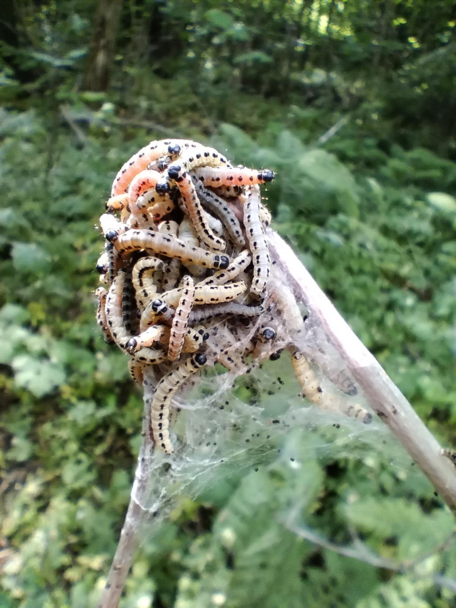

Om Sameksistens

Jeg leste en artikkel (Morgenbladet, 10.04.26) om fugletrekk; det er en målbar økning i arealet av vernet land som er viktig for trekkfugler, men det som ikke er eksplisit i disse tallene er den samtidige økningen av areal brukt til menneskelig aktivitet. Et spørsmål artikkelen dveler ved er om vi heller burde snakke om områder der vi sameksisterer?
Den friluftsestetikken man finner i sosiale medier favoriserer utvilsomt det vakre: det storslåtte fjellet med det snødekte landskapet som ser tilsynelatende nyvaska ut, en illusjon skapt av det krystallhvitt teppet som skjuler de ellers endeløse haugene av stein og grus fjellet stort sett består av. Filtrert gjennom vår nettbaserte opplevelse fremstår det nesten kitsch. Ja, fjellandskapet er både vakkert og sublimt, men også påfallende livløst; svidd av konstant sol og vind hvor enhver inntørket flekk med mose eller lav fungerer som en advarsel; ingenting trives egentlig her oppe. For meg henger fjellets mystikk sammen med dets tilsynelatende inviterende fremtoning—hvorfor skulle vi ellers søke oss dit? Selv om det å bestige topper er en populær fritidsaktivitet som gir en følelse av mestring det er vanskelig å finne andre steder, finnes det, når man først når toppen, ingen tegn på at man er velkommen til å bli.
Sent på våren, i skogen bak huset til foreldra mine, finnes det en type larve (heggspinnmøll) som spiser bladene på heggetrærne som vokser der. Bakkeplanet er ustelt, delvis våtmark med myrplanter jeg ikke har sett noe annet sted, knekte greiner og et helt spekter av treslag fra små spirer til en halvdøde gammal-gran. Du ser tydelig hvilke trær som er hegg, da de blir dekket av et tett slør av silketråder. Alle bladene er borte, noe som forsterker en allerede guffen stemning i den lille skogflekken der disse spøkelsestrærne står. Ser du litt nærmere på de silkekledde greinene, vil du oppdage at under sløret, krypende langs de bladløse kvistene, er larvene. I bøttevis Hver eneste centimeter er dekket; grønn-gule små ormer som vrir seg om hverandre i et glupsk søken, klamrende til kvistene som knapt ser ut til å tåle den samlede vekten. Det er rett og slett motbydelig! Men, og dette er viktig, veldig levende!
Jeg er sikker på at det finnes mange forklaringer på hvorfor mennesker foretrekker det storslåtte fjellet fremfor larveepidemien bak huset jeg vokste opp i. Vi skaper denne tingenes orden hvor vi rangerer det vi synes er vakkert, men naturen bryr seg ikke, og selv om den gjorde det, ville den ikke nødvendigvis følge våre sære preferanser. Sameksistens betyr at vi til en viss grad må omfavne det stygge og frastøtende. Jeg vet ikke hvordan svaret ser ut, men å stelle hagen som om den var en golfbane virker som et skritt i feil retning. Dessuten er det jævlig kjedelig å klippe gress.